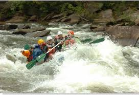
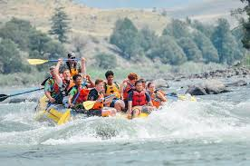
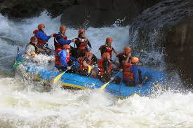
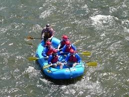

The Ocoee River, located in the Cherokee National Forest, is one of the most popular rivers in the United States for whitewater rafting. There are over 20 rapids! No prior experience is needed for these trips as our guides are well-trained and can help even the most amateur of rafters.
Enjoy both the Shenandoah and George Washington National Forest as you raft down the Shenandoah River. The Shenandoah River is the perfect place for the beginning rafter as there are only small rapids. It is important to note that there may be points throughout the year where this trip will not be available due to a lack of water level.
The Gauley River attracts over 60,000 rafters a year. There are two different routes rafter can take. The lower part of the Gauley river is 12-miles long and has medium to hard rapids (levels III to V). The upper Gauley river is for the most experienced rafters. Areas like Pillow Rock, Iron Ring, and Sweet's Falls are some of the most adventerous rapids in America.
The Pigeon River, just like the Gauley is made up of two diffrent routes. The Upper Pigeon has over twelve Class III and IV rapids, which requires some expertize in rafting. The Lower Pigeon is great for families with children of all ages as the rapids are gentle and there are swimming spots along the route.
| Name | Location | Length | Cost | Add-Ons |
|---|---|---|---|---|
| Ocoee River | Ducktown, TN | 3 - 6 Hours | $60 - $100 |
|
| Shenandoah River | Harpers Ferry, WV | 2-3 Hours | Adults: $114 Children: $109 |
|
| Gauley River | Oak Hill, WV | Basic Trip: 4 hours | Starts at $139 per person/includes riverside lunch |
|
| Pigeon River | Hartford, TN | 1.5 Hours | Between $40 - $50 |
|